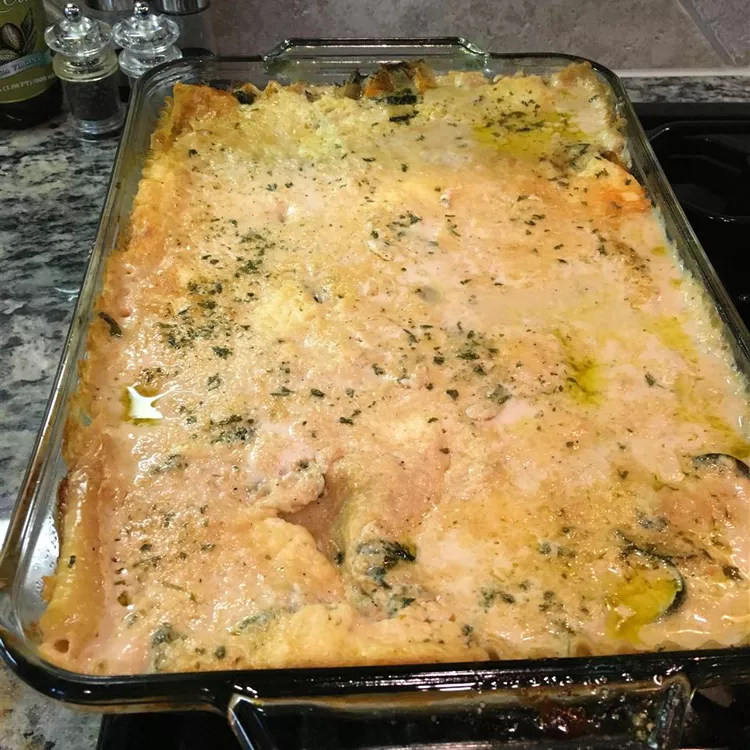

Easy Spinach Lasagna

Gotta Try This Simple and Delicious Lasagna
Lasagna for the family who does not tolerate cooked tomatoes. The uncooked lasagna noodles make this recipe easy and fast. For non-vegetarians try adding a pound of sauteed hot Italian sausage. Simply delicious!
Ingredients
- 1 (10 ounce) package frozen chopped spinach
- 29 ounces Alfredo-style pasta sauce
- ½ cup skim milk
- 1 (8 ounce) package lasagna noodles
- 1 pint part-skim ricotta cheese
- 1 egg
- 8 ounces shredded carrots
- 8 ounces fresh mushrooms, sliced
- ½ cup shredded mozzarella cheese
Steps
- Preheat oven to 350 degrees F (175 degrees C). Coat a 10x15 inch lasagna pan with cooking spray.
- Place the spinach in a medium bowl. Microwave, uncovered, on high for 4 minutes. Mix in ricotta. Beat the egg with a wire whisk, and add it to the spinach and ricotta. Stir well to blend.
- Combine pasta sauce with milk in a medium bowl. Mix well.
- Spread about 1/2 cup pasta sauce mixture evenly in the bottom of the dish. Place 3 uncooked noodles over the sauce. Spread half of the spinach mixture over the noodles. Sprinkle with half of the carrots and half of the mushrooms. Place 3 more noodles over the vegetable mixture. Pour 1 1/2 cups sauce over the noodles. Spread the remaining spinach mixture over the sauce, followed by layers of the remaining carrots and mushrooms. Place 3 more noodles over the vegetables. Pour remaining sauce evenly on top. Sprinkle with the mozzarella cheese. Spray a sheet of aluminum foil with cooking spray. Cover the dish tightly with aluminum foil, spray side down.
- Bake for 50 to 60 minutes. Remove from oven, uncover, and spoon some sauce over the exposed top noodles. Turn the oven off, and place the uncovered dish back into the warm oven for 15 more minutes. Serve at once, or let rest until ready to serve.